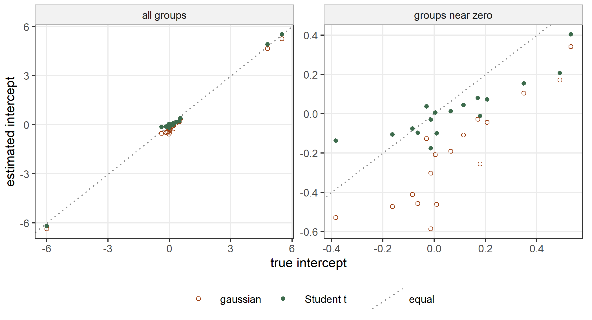
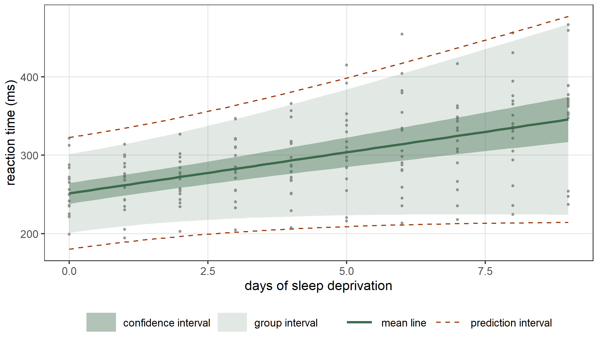

data(Orthodont, package = "nlme")
fit_ri <- statmod(distance ~ I(age - 11) + Sex + random(~ 1 | Subject),
distrib = gaussian1_distrib(), data = Orthodont)
summary(fit_ri)
#> A statmod fit
#>
#> Call: statmod(formula = distance ~ I(age - 11) + Sex + random(~1 |
#> Subject), distrib = gaussian1_distrib(), data = Orthodont)
#>
#> Distribution: gaussian1 Observations: 108
#>
#> === mu [identity link]
#>
#> Parametric terms
#> estimate se z p lower upper
#> (Intercept) 24.97 0.486 51.38 < 1e-16 24.02 25.92
#> I(age - 11) 0.6602 0.06161 10.72 < 1e-16 0.5394 0.7809
#> SexFemale -2.321 0.7614 -3.048 0.002301 -3.813 -0.8287
#>
#> random(~1 | Subject) [27 coefficients, edf 21.61]
#> estimate se lower upper
#> sigma [reml] 1.807 0.2965 1.31 2.493
#> predicted effects (27 levels of Subject)
#> Min. 1st Qu. Median Mean 3rd Qu. Max.
#> (Intercept) -3.585 -1.131 -0.08104 0 0.8681 3.917
#>
#> === sigma [log link]
#>
#> Parametric terms
#> estimate se z p lower upper
#> (Intercept) 0.3588 0.07883 4.551 5.33e-06 0.2043 0.5133
#>
#> 95% intervals, bayesian variance
#> conditional log-likelihood -179.689087 effective df 25.61
#> cAIC 410.599 cBIC 479.290
#> fitted in 1.73 s
#> inner max |grad|/se 1.2e-14 min eigen 0.037
#> outer max |grad|/se 1.2e-08 min eigen 0.92
#> 1 note: print(summary(fit), notes = TRUE)7 Linear mixed models
A linear mixed model describes data that come in groups: the measurements of one child, the days of one subject, the scores of one worker. The observations of one group share some unobserved quantities, the random effects, and these make the observations of a group correlated (Laird and Ware 1982; Pinheiro and Bates 2000). For a gaussian response the model is \[
y_{ij} \sim \mathrm{N}(\mu_{ij}, \sigma), \qquad
\mu_{ij} = x_{ij}^\top\beta + z_{ij}^\top b_i, \qquad
b_i \sim \mathrm{N}(0, \Sigma_b),
\] where \(i\) is the group, \(j\) the observation within the group, \(\beta\) the fixed effects and \(b_i\) the random effects of group \(i\). In statmodels7 the term random() adds the random effects to an equation. The random effects are coefficients with a penalty, and the penalty is minus the logarithm of their density. The hyperparameters of the penalty describe \(\Sigma_b\), and REML estimates them (Section 2.2).
This chapter shows a random intercept, a random slope, several structures for \(\Sigma_b\), nested and crossed groupings, random effects in the equation of \(\sigma\), a Student t distribution for the random effects, and the predictions for a new group. In each section we compare the fit with a reference package: lme() of nlme (Pinheiro and Bates 2000), lmer() of lme4 (Bates et al. 2015) or glmmTMB() of glmmTMB (Brooks et al. 2017).
7.1 A random intercept
We return to the Orthodont data of Section 2.2: the distance from the pituitary to the pterygomaxillary fissure of 27 children, measured at ages 8, 10, 12 and 14 (Potthoff and Roy 1964). We center the age at 11 years, with I(age - 11) in the formula, and give each child a random intercept: \[
\mu_{ij} = \beta_0 + \beta_1 a_{ij} + \beta_2 f_i + b_i, \qquad
b_i \sim \mathrm{N}(0, \tau),
\] where \(a_{ij}\) is the centered age and \(f_i\) is 1 for a girl.
The summary reports the random intercept as a block with 27 coefficients, one for each child. Its hyperparameter sigma is the standard deviation \(\tau\) of the random intercepts, with a standard error and an interval. The function lme() fits the same model by REML:
lme_ri <- nlme::lme(distance ~ I(age - 11) + Sex, random = ~ 1 | Subject,
data = Orthodont)
nlme::fixef(lme_ri)
#> (Intercept) I(age - 11) SexFemale
#> 24.9687500 0.6601852 -2.3210227
nlme::VarCorr(lme_ri)
#> Subject = pdLogChol(1)
#> Variance StdDev
#> (Intercept) 3.266784 1.807425
#> Residual 2.049456 1.431592
logLik(lme_ri)
#> 'log Lik.' -218.7563 (df=5)
logLik(fit_ri, type = "marginal")
#> 'log Lik.' -218.7563 (df=5)The fixed effects, the two standard deviations and the restricted log-likelihood are the same. The residual standard deviation of lme() is \(\exp(\hat\gamma_0)\), the exponential of the intercept of sigma: 1.431592. The interval for \(\tau\) in the summary is built on the logarithm of \(\tau\) and mapped back, as the interval of nlme::intervals():
nlme::intervals(lme_ri, which = "var-cov")$reStruct
#> $Subject
#> lower est. upper
#> sd((Intercept)) 1.310379 1.807425 2.493007
#>
#> attr(,"label")
#> [1] "Random Effects:"The estimated random intercepts are the coefficients of the term. They are the best linear unbiased predictions of \(b_i\) (Robinson 1991). We compare them with those of lme():
b_ri <- coef(fit_ri)$mu
b_ri <- b_ri[grepl("random", names(b_ri))]
head(b_ri, n = 4)
#> random.M16 random.M05 random.M02 random.M11
#> -1.701834 -1.701834 -1.377675 -1.161569
b_lme <- nlme::ranef(lme_ri)[, 1]
max(abs(b_ri - b_lme))
#> [1] 2.0411e-09A standard deviation for each sex
As in every chapter of this part, the other parameters of the distribution can have covariates too. The boys of Orthodont vary more around their own line than the girls. We give sigma an equation with the sex:
fit_rs <- statmod(distance ~ I(age - 11) + Sex + random(~ 1 | Subject) |
sigma ~ Sex,
distrib = gaussian1_distrib(), data = Orthodont)
summary(fit_rs)
#> A statmod fit
#>
#> Call: statmod(formula = distance ~ I(age - 11) + Sex + random(~1 |
#> Subject) | sigma ~ Sex, distrib = gaussian1_distrib(), data = Orthodont)
#>
#> Distribution: gaussian1 Observations: 108
#>
#> === mu [identity link]
#>
#> Parametric terms
#> estimate se z p lower upper
#> (Intercept) 24.97 0.5099 48.97 < 1e-16 23.97 25.97
#> I(age - 11) 0.5499 0.04731 11.62 < 1e-16 0.4572 0.6426
#> SexFemale -2.321 0.763 -3.042 0.002349 -3.816 -0.8256
#>
#> random(~1 | Subject) [27 coefficients, edf 21.75]
#> estimate se lower upper
#> sigma [reml] 1.839 0.2933 1.346 2.514
#> predicted effects (27 levels of Subject)
#> Min. 1st Qu. Median Mean 3rd Qu. Max.
#> (Intercept) -3.96 -1.154 -0.07626 0 0.8948 3.686
#>
#> === sigma [log link]
#>
#> Parametric terms
#> estimate se z p lower upper
#> (Intercept) 0.5663 0.1036 5.464 4.659e-08 0.3632 0.7695
#> SexFemale -0.7894 0.1717 -4.597 4.277e-06 -1.126 -0.4528
#>
#> 95% intervals, bayesian variance
#> conditional log-likelihood -167.299822 effective df 26.75
#> cAIC 388.100 cBIC 459.848
#> fitted in 970 ms
#> inner max |grad|/se 6.2e-15 min eigen 0.016
#> outer max |grad|/se 3.5e-14 min eigen 0.35
#> 1 note: print(summary(fit), notes = TRUE)
exp(cumsum(coef(fit_rs)$sigma))
#> (Intercept) SexFemale
#> 1.7617578 0.8000713The equation of sigma is \(\log\sigma_{ij} = \gamma_0 + \gamma_1 f_i\), so the residual standard deviation is \(\exp(\hat\gamma_0)\) for the boys and \(\exp(\hat\gamma_0 + \hat\gamma_1)\) for the girls. The coefficient \(\hat\gamma_1 = -0.789\) is the logarithm of the ratio of the two, and \(\exp(\hat\gamma_1) = 0.454\). The standard deviation of the random intercepts and the fixed effects of the mean are close to those of fit_ri. In lme() the same model has the variance function varIdent():
lme_rs <- nlme::lme(distance ~ I(age - 11) + Sex, random = ~ 1 | Subject,
weights = nlme::varIdent(form = ~ 1 | Sex),
data = Orthodont)
ratio <- coef(lme_rs$modelStruct$varStruct, unconstrained = FALSE)
c(Male = lme_rs$sigma, Female = lme_rs$sigma * ratio[["Female"]])
#> Male Female
#> 1.7617578 0.8000713
logLik(lme_rs)
#> 'log Lik.' -210.1784 (df=6)
logLik(fit_rs, type = "marginal")
#> 'log Lik.' -210.1784 (df=6)The two models have the same fixed effects, so we can compare them with their restricted log-likelihoods (Section 2.5):
l0 <- logLik(fit_ri, type = "marginal")
l1 <- logLik(fit_rs, type = "marginal")
lr_sex <- 2 * (as.numeric(l1) - as.numeric(l0))
lr_sex
#> [1] 17.15577
pchisq(lr_sex, df = 1, lower.tail = FALSE)
#> [1] 3.443627e-05The girls have a residual standard deviation less than half that of the boys, and the test rejects a common value.
7.2 A random slope
The data frame sleepstudy of the lme4 package gives the average reaction time of 18 subjects on each of ten days of sleep deprivation, from day 0 to day 9 (Belenky et al. 2003). Each subject has its own line, so we give each subject a random intercept and a random slope in the days: \[
\mu_{ij} = \beta_0 + \beta_1 d_{ij} + b_{0i} + b_{1i} d_{ij}, \qquad
(b_{0i}, b_{1i}) \sim \mathrm{N}(0, \Sigma_b).
\] By default \(\Sigma_b\) is unstructured, with two standard deviations and a correlation:
data(sleepstudy, package = "lme4")
fit_sc <- statmod(Reaction ~ Days + random(~ Days | Subject),
distrib = gaussian1_distrib(), data = sleepstudy)
summary(fit_sc)
#> A statmod fit
#>
#> Call: statmod(formula = Reaction ~ Days + random(~Days | Subject),
#> distrib = gaussian1_distrib(), data = sleepstudy)
#>
#> Distribution: gaussian1 Observations: 180
#>
#> === mu [identity link]
#>
#> Parametric terms
#> estimate se z p lower upper
#> (Intercept) 251.4 6.825 36.84 < 1e-16 238 264.8
#> Days 10.47 1.546 6.771 1.275e-11 7.438 13.5
#>
#> random(~Days | Subject) [36 coefficients, edf 27.02]
#> estimate se lower upper
#> sd[(Intercept)] [reml] 24.74 5.836 15.58 39.28
#> sd[Days] [reml] 5.922 1.248 3.918 8.951
#> cor[(Intercept), Days] [reml] 0.06555 0.325 -0.5184 0.6078
#> predicted effects (18 levels of Subject)
#> Min. 1st Qu. Median Mean 3rd Qu. Max.
#> (Intercept) -40.4 -11.61 2.767 0 15.71 34.89
#> Days -10.75 -3.056 0.3243 0 2.973 9.199
#>
#> === sigma [log link]
#>
#> Parametric terms
#> estimate se z p lower upper
#> (Intercept) 3.242 0.05845 55.47 < 1e-16 3.128 3.357
#>
#> 95% intervals, bayesian variance
#> conditional log-likelihood -824.506969 effective df 30.02
#> cAIC 1709.058 cBIC 1804.917
#> fitted in 1.11 s
#> inner max |grad|/se 6.6e-15 min eigen 0.03
#> outer max |grad|/se 3.2e-07 min eigen 0.62
#> 1 note: print(summary(fit), notes = TRUE)The search runs on the coordinates of the Cholesky factor of \(\Sigma_b\), which take any real value (Pinheiro and Bates 1996). The function hyper() reports these coordinates, and param_value() turns them back into the matrix. We compare the matrix with the one of lmer():
hyper(fit_sc)[, c("name", "estimate")]
#> name estimate
#> 1 sigma_log_L1 3.2084396
#> 2 sigma_log_L2 1.7765437
#> 3 sigma_L2.1 0.3882037
param_value(log_cholesky(2), eta = hyper(fit_sc)$estimate)
#> v1 v2
#> v1 612.089933 9.604336
#> v2 9.604336 35.071665
lmer_sc <- lme4::lmer(Reaction ~ Days + (Days | Subject), data = sleepstudy)
lme4::VarCorr(lmer_sc)$Subject[, ]
#> (Intercept) Days
#> (Intercept) 612.100158 9.604409
#> Days 9.604409 35.071714
logLik(lmer_sc)
#> 'log Lik.' -871.8141 (df=6)
logLik(fit_sc, type = "marginal")
#> 'log Lik.' -871.8141 (df=6)The two covariance matrices and the two restricted log-likelihoods are the same.
A standard deviation at zero
When the groups do not differ in their slopes, the standard deviation of the random slopes goes to zero. We simulate twenty groups of six observations with random intercepts and a common slope:
set.seed(3)
n_group <- 20
n_time <- 6
bd <- data.frame(id = factor(rep(1:n_group, each = n_time)),
t = rep(0:(n_time - 1), times = n_group))
b0 <- rnorm(n_group, mean = 0, sd = 1)
bd$y <- 10 + 0.5 * bd$t + b0[bd$id] + rnorm(nrow(bd), mean = 0, sd = 1)
fit_bd <- statmod(y ~ t + random(~ t | id), distrib = gaussian1_distrib(),
data = bd)
summary(fit_bd)
#> A statmod fit
#>
#> Call: statmod(formula = y ~ t + random(~t | id), distrib = gaussian1_distrib(),
#> data = bd)
#>
#> Distribution: gaussian1 Observations: 120
#>
#> === mu [identity link]
#>
#> Parametric terms
#> estimate se z p lower upper
#> (Intercept) 9.95 0.2464 40.38 < 1e-16 9.467 10.43
#> t 0.4547 0.04729 9.615 < 1e-16 0.362 0.5474
#>
#> random(~t | id) [40 coefficients, edf 16.28]
#> estimate se lower upper
#> sd[(Intercept)] [reml] 0.897 0.2109 0.5658 1.422
#> sd[t] [reml] 0.005813
#> cor[(Intercept), t] [reml] -1
#> predicted effects (20 levels of id)
#> Min. 1st Qu. Median Mean 3rd Qu. Max.
#> (Intercept) -1.366 -0.5326 -0.1264 0 0.5562 1.457
#> t -0.00944 -0.003604 0.0008192 0 0.003451 0.008849
#>
#> === sigma [log link]
#>
#> Parametric terms
#> estimate se z p lower upper
#> (Intercept) -0.1229 0.07093 -1.733 0.08312 -0.2619 0.01611
#>
#> 95% intervals, bayesian variance
#> conditional log-likelihood -146.385730 effective df 19.28
#> cAIC 331.324 cBIC 385.056
#> fitted in 1.32 s
#> inner max |grad|/se 8.8e-14 min eigen 5.5e-06
#> outer max |grad|/se 3.1e-05 min eigen 0.39
#> 2 notes: print(summary(fit), notes = TRUE)
statmod_certificate(fit_bd)$state
#> [1] "boundary"
statmod_certificate(fit_bd)$boundary
#> [1] "mu/random(~t | id)/sigma_log_L2"The standard deviation of the slopes is close to zero and the correlation is \(-1\). The certificate is boundary and names the coordinate: the second logarithm of the Cholesky factor, which carries the standard deviation of the slopes, has run to the edge of its scale. A standard deviation at zero has no interval on the logarithmic scale, so the summary leaves out the standard error and the interval of that row and of the correlation. lmer() reports the same fit as singular:
lmer_bd <- lme4::lmer(y ~ t + (t | id), data = bd)
lme4::isSingular(lmer_bd)
#> [1] TRUE
logLik(lmer_bd)
#> 'log Lik.' -176.7074 (df=6)
logLik(fit_bd, type = "marginal")
#> 'log Lik.' -176.7074 (df=6)The model with a random intercept alone has almost the same restricted log-likelihood:
fit_bd0 <- statmod(y ~ t + random(~ 1 | id), distrib = gaussian1_distrib(),
data = bd)
lr_bd <- 2 * (as.numeric(logLik(fit_bd, type = "marginal")) -
as.numeric(logLik(fit_bd0, type = "marginal")))
lr_bd
#> [1] 0.01343039Under the smaller model the variance of the slopes is zero, which is on the boundary of its range, so the statistic does not have the \(\chi^2\) distribution with two degrees of freedom (Self and Liang 1987). Here the statistic is so small that the conclusion does not depend on the distribution: the smaller model describes these data.
7.3 Structures for the covariance matrix
With \(d\) random effects in a group an unstructured \(\Sigma_b\) has \(d(d+1)/2\) parameters. A structure describes it with fewer. The argument distrib of random() takes the distribution of the random effects, and for several effects this is a multivariate gaussian distribution whose covariance matrix has the structure we choose. The package parameters7 gives the structures: log_cholesky() (unstructured), compound_symmetry(), ar1(), diagonal_matrix() and others. The mean of the random effects is zero, so we hold it with fixed().
The data frame Machines of the nlme package gives a productivity score of six workers on three machines, three times on each machine (Pinheiro and Bates 2000, sec. 1.3). Each worker has a random effect for each machine, so \(d = 3\). We first fit the unstructured matrix:
data(Machines, package = "nlme")
fit_un <- statmod(score ~ Machine + random(~ 0 + Machine | Worker),
distrib = gaussian1_distrib(), data = Machines)
summary(fit_un)
#> A statmod fit
#>
#> Call: statmod(formula = score ~ Machine + random(~0 + Machine | Worker),
#> distrib = gaussian1_distrib(), data = Machines)
#>
#> Distribution: gaussian1 Observations: 54
#>
#> === mu [identity link]
#>
#> Parametric terms
#> estimate se z p lower upper
#> (Intercept) 52.36 1.681 31.14 < 1e-16 49.06 55.65
#> MachineB 7.967 2.422 3.29 0.001003 3.22 12.71
#> MachineC 13.92 1.54 9.038 < 1e-16 10.9 16.93
#>
#> random(~0 + Machine | Worker) [18 coefficients, edf 14.48]
#> estimate se lower upper
#> sd[MachineA] [reml] 4.08 1.315 2.17 7.673
#> sd[MachineB] [reml] 8.629 2.741 4.629 16.08
#> sd[MachineC] [reml] 4.39 1.411 2.338 8.242
#> cor[MachineA, MachineB] [reml] 0.8028 0.1641 0.1989 0.9648
#> cor[MachineA, MachineC] [reml] 0.6228 0.2815 -0.1702 0.9262
#> cor[MachineB, MachineC] [reml] 0.771 0.1859 0.1235 0.958
#> predicted effects (6 levels of Worker)
#> Min. 1st Qu. Median Mean 3rd Qu. Max.
#> MachineA -5.592 -0.9803 -0.3329 0 0.2799 6.969
#> MachineB -16.58 -0.02039 2.441 0 4.183 7.779
#> MachineC -5.03 -3.565 -0.2422 0 3.588 5.323
#>
#> === sigma [log link]
#>
#> Parametric terms
#> estimate se z p lower upper
#> (Intercept) -0.03919 0.1178 -0.3327 0.7394 -0.2701 0.1917
#>
#> 95% intervals, bayesian variance
#> conditional log-likelihood -65.765757 effective df 18.48
#> cAIC 168.496 cBIC 205.256
#> fitted in 1.31 s
#> inner max |grad|/se 4.4e-14 min eigen 0.0019
#> outer max |grad|/se 0.00085 min eigen 0.2
#> 1 note: print(summary(fit), notes = TRUE)The random effect of worker \(i\) on machine \(m\) is \(b_{im}\), and the model is \[
\mu_{ijm} = \beta_m + b_{im}, \qquad
(b_{iA}, b_{iB}, b_{iC}) \sim \mathrm{N}(0, \Sigma_b),
\] where \(\beta_m\) is the mean score on machine \(m\) (the intercept for machine A, and the intercept plus MachineB or MachineC for the others). The summary reports \(\Sigma_b\) through the standard deviation of each effect and the three correlations. The effects on machine B vary twice as much as the others, and all three correlations are positive.
Compound symmetry gives the three effects one variance \(\tau^2\) and one correlation \(\varrho\): \[
\Sigma_b = \tau^2\begin{pmatrix} 1 & \varrho & \varrho \\
\varrho & 1 & \varrho \\ \varrho & \varrho & 1 \end{pmatrix}.
\] We build the distribution and pass it to random():
cs3 <- fixed(mvgaussian1_distrib(n_dim = 3, sigma = compound_symmetry(3)),
mu = 0)
cs3@params
#> [1] "sigma_log_scale" "sigma_logit_rho"
fit_cs <- statmod(score ~ Machine + random(~ 0 + Machine | Worker,
distrib = cs3),
distrib = gaussian1_distrib(), data = Machines)
summary(fit_cs)
#> A statmod fit
#>
#> Call: statmod(formula = score ~ Machine + random(~0 + Machine | Worker,
#> distrib = cs3), distrib = gaussian1_distrib(), data = Machines)
#>
#> Distribution: gaussian1 Observations: 54
#>
#> === mu [identity link]
#>
#> Parametric terms
#> estimate se z p lower upper
#> (Intercept) 52.36 2.486 21.06 < 1e-16 47.48 57.23
#> MachineB 7.967 2.177 3.66 0.0002527 3.7 12.23
#> MachineC 13.92 2.177 6.393 1.63e-10 9.65 18.18
#>
#> random(~0 + Machine | Worker, distrib = cs3) [18 coefficients, edf 14.76]
#> estimate se lower upper
#> sd [reml] 6.064 1.481 3.757 9.787
#> rho [reml] 0.6217 0.2213 0.02075 0.8926
#> predicted effects (6 levels of Worker)
#> Min. 1st Qu. Median Mean 3rd Qu. Max.
#> MachineA -5.598 -1.052 -0.3678 0 0.265 7.138
#> MachineB -16.49 0.01264 2.451 0 4.159 7.66
#> MachineC -5.027 -3.648 -0.272 0 3.642 5.398
#>
#> === sigma [log link]
#>
#> Parametric terms
#> estimate se z p lower upper
#> (Intercept) -0.03918 0.1178 -0.3325 0.7395 -0.2701 0.1918
#>
#> 95% intervals, bayesian variance
#> conditional log-likelihood -65.624603 effective df 18.76
#> cAIC 168.778 cBIC 206.101
#> fitted in 540 ms
#> inner max |grad|/se 3.8e-14 min eigen 0.0016
#> outer max |grad|/se 9.8e-08 min eigen 0.35
#> 1 note: print(summary(fit), notes = TRUE)
S_cs3 <- param_value(compound_symmetry(3), eta = hyper(fit_cs)$estimate)The argument mu = 0 holds the whole mean vector \((\mu_1, \mu_2, \mu_3)\) at zero. The two free parameters are the logarithm of the variance and a transformation of the correlation onto the whole line. The summary reports the two parameters of the structure: sd is the common standard deviation \(\hat\tau = 6.064\) and rho is the common correlation \(\hat\varrho = 0.622\).
The standard errors of the fixed effects differ from those of the unstructured model. A contrast such as MachineB is the difference of the mean scores on machines B and A, and each worker enters it through \(b_{iB} - b_{iA}\). The variance of that difference is \(2\tau^2(1 - \varrho)\) under compound symmetry and \(\tau_A^2 + \tau_B^2 - 2\,\mathrm{cov}(b_{iA}, b_{iB})\) under the unstructured matrix, so the two structures give the contrast different standard errors.
With correlated = FALSE the matrix is diagonal, with one standard deviation for each machine:
fit_dg <- statmod(score ~ Machine + random(~ 0 + Machine | Worker,
correlated = FALSE),
distrib = gaussian1_distrib(), data = Machines)
summary(fit_dg)
#> A statmod fit
#>
#> Call: statmod(formula = score ~ Machine + random(~0 + Machine | Worker,
#> correlated = FALSE), distrib = gaussian1_distrib(), data = Machines)
#>
#> Distribution: gaussian1 Observations: 54
#>
#> === mu [identity link]
#>
#> Parametric terms
#> estimate se z p lower upper
#> (Intercept) 52.36 1.681 31.15 < 1e-16 49.06 55.65
#> MachineB 7.967 3.908 2.038 0.04151 0.3064 15.63
#> MachineC 13.92 2.467 5.641 1.695e-08 9.081 18.75
#>
#> random(~0 + Machine | Worker, correlated = FALSE) [18 coefficients, edf 14.81]
#> estimate se lower upper
#> MachineA.sigma [reml] 4.079 1.314 2.17 7.669
#> MachineB.sigma [reml] 8.625 2.739 4.629 16.07
#> MachineC.sigma [reml] 4.389 1.41 2.338 8.239
#> predicted effects (6 levels of Worker)
#> Min. 1st Qu. Median Mean 3rd Qu. Max.
#> MachineA -5.455 -1.069 -0.3818 0 0.2564 7.047
#> MachineB -16.62 0.03596 2.484 0 4.185 7.679
#> MachineC -4.894 -3.647 -0.2843 0 3.571 5.375
#>
#> === sigma [log link]
#>
#> Parametric terms
#> estimate se z p lower upper
#> (Intercept) -0.03918 0.1178 -0.3325 0.7395 -0.2702 0.1918
#>
#> 95% intervals, bayesian variance
#> conditional log-likelihood -65.602044 effective df 18.81
#> cAIC 168.824 cBIC 206.236
#> fitted in 340 ms
#> inner max |grad|/se 4.9e-14 min eigen 0.0018
#> outer max |grad|/se 2.5e-08 min eigen 0.99
#> 1 note: print(summary(fit), notes = TRUE)The three standard deviations are those of the unstructured model. The correlations are now zero, so the standard errors of MachineB and MachineC are larger: a worker’s effects no longer cancel in the difference between two machines.
In lme() the three structures are pdSymm(), pdCompSymm() and pdDiag(). We compare the restricted log-likelihoods:
lme_un <- nlme::lme(score ~ Machine, random = ~ 0 + Machine | Worker,
data = Machines)
lme_cs <- nlme::lme(score ~ Machine,
random = list(Worker = nlme::pdCompSymm(~ 0 + Machine)),
data = Machines)
lme_dg <- nlme::lme(score ~ Machine,
random = list(Worker = nlme::pdDiag(~ 0 + Machine)),
data = Machines)
data.frame(
structure = c("unstructured", "compound symmetry", "diagonal"),
statmod = c(logLik(fit_un, type = "marginal"),
logLik(fit_cs, type = "marginal"),
logLik(fit_dg, type = "marginal")),
lme = c(logLik(lme_un), logLik(lme_cs), logLik(lme_dg)))
#> structure statmod lme
#> 1 unstructured -104.1556 -104.1556
#> 2 compound symmetry -107.8438 -107.8438
#> 3 diagonal -108.8255 -108.8255The three fits agree with lme(). The unstructured matrix has six parameters, compound symmetry two and the diagonal matrix three. The fixed effects are the same in the three models, so we compare the simpler structures with the unstructured one:
l_un <- as.numeric(logLik(fit_un, type = "marginal"))
l_cs <- as.numeric(logLik(fit_cs, type = "marginal"))
l_dg <- as.numeric(logLik(fit_dg, type = "marginal"))
lr_cs <- 2 * (l_un - l_cs)
lr_dg <- 2 * (l_un - l_dg)
pchisq(lr_cs, df = 4, lower.tail = FALSE)
#> [1] 0.1172871
pchisq(lr_dg, df = 3, lower.tail = FALSE)
#> [1] 0.02509747The diagonal matrix is rejected at the 5% level, because the three effects of a worker are correlated: a good worker is good on every machine. Compound symmetry is not rejected.
Covariance or precision
The distribution mvgaussian2_distrib() puts the structure on the precision matrix \(\Sigma_b^{-1}\) in place of the covariance matrix. For an unstructured matrix the two give the same model, because the inverse of an unstructured matrix is unstructured:
pr3 <- fixed(mvgaussian2_distrib(n_dim = 3, omega = log_cholesky(3)),
mu = 0)
fit_pr <- statmod(score ~ Machine + random(~ 0 + Machine | Worker,
distrib = pr3),
distrib = gaussian1_distrib(), data = Machines)
summary(fit_pr)
#> A statmod fit
#>
#> Call: statmod(formula = score ~ Machine + random(~0 + Machine | Worker,
#> distrib = pr3), distrib = gaussian1_distrib(), data = Machines)
#>
#> Distribution: gaussian1 Observations: 54
#>
#> === mu [identity link]
#>
#> Parametric terms
#> estimate se z p lower upper
#> (Intercept) 52.36 1.681 31.15 < 1e-16 49.06 55.65
#> MachineB 7.967 2.421 3.291 0.0009988 3.222 12.71
#> MachineC 13.92 1.54 9.036 < 1e-16 10.9 16.94
#>
#> random(~0 + Machine | Worker, distrib = pr3) [18 coefficients, edf 14.48]
#> estimate se lower upper
#> cvar[MachineA] [reml] 5.917 3.965 1.591 22.01
#> cvar[MachineB] [reml] 17.53 11.67 4.752 64.64
#> cvar[MachineC] [reml] 7.818 5.17 2.139 28.57
#> pcor[MachineA, MachineB] [reml] 0.6477 0.2717 -0.1451 0.934
#> pcor[MachineA, MachineC] [reml] 0.009793 0.4706 -0.7224 0.7317
#> pcor[MachineB, MachineC] [reml] 0.5809 0.3097 -0.2471 0.9186
#> predicted effects (6 levels of Worker)
#> Min. 1st Qu. Median Mean 3rd Qu. Max.
#> MachineA -5.592 -0.9803 -0.3329 0 0.28 6.969
#> MachineB -16.58 -0.02038 2.441 0 4.183 7.779
#> MachineC -5.03 -3.565 -0.2422 0 3.588 5.323
#>
#> === sigma [log link]
#>
#> Parametric terms
#> estimate se z p lower upper
#> (Intercept) -0.03918 0.1178 -0.3326 0.7394 -0.2701 0.1917
#>
#> 95% intervals, bayesian variance
#> conditional log-likelihood -65.765892 effective df 18.48
#> cAIC 168.496 cBIC 205.256
#> fitted in 610 ms
#> inner max |grad|/se 3.8e-14 min eigen 0.0019
#> outer max |grad|/se 1.6e-07 min eigen 0.18
#> 1 note: print(summary(fit), notes = TRUE)
Om <- param_value(log_cholesky(3), eta = hyper(fit_pr)$estimate)
S_pr <- solve(Om)
pc_ac <- -Om[1, 3] / sqrt(Om[1, 1] * Om[3, 3])
c(cvar_A = 1 / Om[1, 1], var_A = S_pr[1, 1], pcor_AC = pc_ac,
cor_AC = S_pr[1, 3] / sqrt(S_pr[1, 1] * S_pr[3, 3]))
#> cvar_A var_A pcor_AC cor_AC
#> 5.916682666 16.640532268 0.009793219 0.622504687The fixed effects are those of fit_un, and so is the restricted log-likelihood (-104.1556). The summary reports the quantities that the precision matrix \(\Omega = \Sigma_b^{-1}\) gives directly, and not the standard deviations and correlations of fit_un, which we compute from \(\Sigma_b = \Omega^{-1}\) when we need them. The conditional variance cvar of an effect is its variance given the other two effects of the same worker, and the partial correlation pcor of two effects is their correlation given the third: \[
\mathrm{Var}(b_{im} \mid b_{i,-m}) = \frac{1}{\Omega_{mm}}, \qquad
\mathrm{cor}(b_{im}, b_{in} \mid b_{i,-mn}) =
-\frac{\Omega_{mn}}{\sqrt{\Omega_{mm}\Omega_{nn}}}.
\] The conditional variances are smaller than the variances (for machine A, 5.92 against 16.64): knowing how a worker does on two machines tells us much about the third. The partial correlation of machines A and C is 0.010, against a correlation of 0.623. Given a worker’s effect on machine B, the effects on A and C are almost uncorrelated, so the correlation between A and C passes through B. A zero partial correlation is a zero entry of \(\Omega\), which is why a structure that sets entries of the precision matrix to zero describes conditional independence.
For a structure such as ar1() the two distributions give two different models: an autoregressive covariance matrix and an autoregressive precision matrix.
An autoregressive structure
When the random effects of a group are ordered in time, the effects of close times are often more correlated than those of distant times. The structure ar1() has the correlation \(\rho^{|s - t|}\) between the times \(s\) and \(t\). We simulate 30 subjects measured at five times \(t = 1, \dots, 5\), with three measurements \(k = 1, 2, 3\) at each time: \[
y_{itk} = \beta_0 + \beta_1 t + b_{it} + \varepsilon_{itk}, \qquad
\varepsilon_{itk} \sim \mathrm{N}(0, \sigma),
\] \[
(b_{i1}, \dots, b_{i5}) \sim \mathrm{N}(0, \Sigma_b), \qquad
(\Sigma_b)_{st} = \tau^2\rho^{|s - t|},
\] with \(\beta_0 = 2\), \(\beta_1 = 0.3\), \(\tau = 1.5\), \(\rho = 0.7\) and \(\sigma = 1\). Subject \(i\) has one random effect \(b_{it}\) for each time, and the effects of two times are more correlated the closer the times are. The code draws the five effects of each subject as \(L z\), where \(L\) is the Cholesky factor of \(\Sigma_b\) and \(z\) is a vector of five independent standard normal values:
set.seed(7)
n_subj <- 30
n_time <- 5
rho <- 0.7
S_b <- 1.5^2 * rho^abs(outer(1:n_time, 1:n_time, "-"))
L_b <- t(chol(S_b))
ar <- expand.grid(rep = 1:3, time = 1:n_time, id = 1:n_subj)
b_sim <- t(L_b %*% matrix(rnorm(n_time * n_subj), nrow = n_time))
ar$y <- 2 + 0.3 * ar$time + b_sim[cbind(ar$id, ar$time)] +
rnorm(nrow(ar), mean = 0, sd = 1)
ar$id <- factor(ar$id)
ar$time_g <- factor(ar$time)The column time_g is time as a factor, so random(~ 0 + time_g | id) gives each subject one random effect for each time. The three measurements at each time separate the variance of the random effects from the residual variance. We fit the model and compare it with the ar1() structure of glmmTMB():
ar5 <- fixed(mvgaussian1_distrib(n_dim = 5, sigma = ar1(5)), mu = 0)
fit_ar <- statmod(y ~ time + random(~ 0 + time_g | id, distrib = ar5),
distrib = gaussian1_distrib(), data = ar)
summary(fit_ar)
#> A statmod fit
#>
#> Call: statmod(formula = y ~ time + random(~0 + time_g | id, distrib = ar5),
#> distrib = gaussian1_distrib(), data = ar)
#>
#> Distribution: gaussian1 Observations: 450
#>
#> === mu [identity link]
#>
#> Parametric terms
#> estimate se z p lower upper
#> (Intercept) 2.195 0.3182 6.898 5.262e-12 1.571 2.819
#> time 0.3311 0.08177 4.049 5.140e-05 0.1708 0.4914
#>
#> random(~0 + time_g | id, distrib = ar5) [150 coefficients, edf 101.94]
#> estimate se lower upper
#> sd [reml] 1.356 0.1338 1.118 1.646
#> rho [reml] 0.7363 0.06722 0.5747 0.8426
#> predicted effects (30 levels of id)
#> Min. 1st Qu. Median Mean 3rd Qu. Max.
#> time_g1 -2.578 -1.016 -0.07369 -0.01646 0.5002 2.429
#> time_g2 -2.793 -0.7404 -0.03763 -0.01779 0.6151 2.9
#> time_g3 -1.856 -0.4458 0.2882 0.1797 0.6521 3.763
#> time_g4 -2.391 -0.6409 -0.06217 -0.04221 0.4719 3.073
#> time_g5 -2.44 -0.8257 -0.1866 -0.01511 0.9586 3.319
#>
#> === sigma [log link]
#>
#> Parametric terms
#> estimate se z p lower upper
#> (Intercept) 0.02158 0.03958 0.5451 0.5857 -0.056 0.09916
#>
#> 95% intervals, bayesian variance
#> conditional log-likelihood -596.261976 effective df 104.94
#> cAIC 1402.405 cBIC 1833.631
#> fitted in 1.01 s
#> inner max |grad|/se 3.3e-15 min eigen 0.013
#> outer max |grad|/se 3.4e-09 min eigen 0.44
#> 1 note: print(summary(fit), notes = TRUE)
S_ar <- param_value(ar1(5), eta = hyper(fit_ar)$estimate)The summary reports the two parameters of the structure, the standard deviation sd \(= \hat\tau\) and the correlation of two consecutive times rho \(= \hat\rho\). The correlation of times \(s\) and \(t\) is \(\hat\rho^{|s-t|}\). The estimates are close to the values of the simulation: \(\hat\tau =
1.356\) against 1.5, \(\hat\rho =
0.736\) against 0.7, and \(\exp(\hat\gamma_0) = 1.022\) against \(\sigma = 1\). The fixed effects (Intercept) and time estimate \(\beta_0\) and \(\beta_1\). The ar1() structure of glmmTMB() fits the same model:
tmb_ar <- glmmTMB::glmmTMB(y ~ time + ar1(0 + time_g | id), data = ar,
REML = TRUE)
glmmTMB::VarCorr(tmb_ar)
#>
#> Conditional model:
#> Groups Name Std.Dev. Corr
#> id time_g1 1.3561 0.736 (ar1)
#> Residual 1.0218
logLik(tmb_ar)
#> 'log Lik.' -757.7052 (df=5)
logLik(fit_ar, type = "marginal")
#> 'log Lik.' -757.7052 (df=5)The two fits are the same.
7.4 Nested and crossed groupings
A formula can have several random() terms, each with its own grouping.
Nested groupings
In the Machines data each worker uses each machine three times, so the pairs of worker and machine are groups within the workers. We give each worker a random intercept, and each pair a random intercept of its own: \[
\mu_{ijm} = \beta_m + u_i + v_{im}, \qquad u_i \sim \mathrm{N}(0, \tau_W),
\qquad v_{im} \sim \mathrm{N}(0, \tau_{WM}).
\] The grouping of the second term is the interaction Worker:Machine:
fit_ne <- statmod(score ~ Machine + random(~ 1 | Worker) +
random(~ 1 | Worker:Machine),
distrib = gaussian1_distrib(), data = Machines)
summary(fit_ne)
#> A statmod fit
#>
#> Call: statmod(formula = score ~ Machine + random(~1 | Worker) + random(~1 |
#> Worker:Machine), distrib = gaussian1_distrib(), data = Machines)
#>
#> Distribution: gaussian1 Observations: 54
#>
#> === mu [identity link]
#>
#> Parametric terms
#> estimate se z p lower upper
#> (Intercept) 52.36 2.486 21.06 < 1e-16 47.48 57.23
#> MachineB 7.967 2.177 3.66 0.0002527 3.7 12.23
#> MachineC 13.92 2.177 6.393 1.63e-10 9.65 18.18
#>
#> random(~1 | Worker) [6 coefficients, edf 4.14]
#> estimate se lower upper
#> sigma [reml] 4.781 1.839 2.25 10.16
#> predicted effects (6 levels of Worker)
#> Min. 1st Qu. Median Mean 3rd Qu. Max.
#> (Intercept) -7.514 -1.047 0.4924 0 2.17 5.361
#>
#> random(~1 | Worker:Machine) [18 coefficients, edf 10.62]
#> estimate se lower upper
#> sigma [reml] 3.73 0.8525 2.383 5.837
#> predicted effects (18 levels of Worker:Machine)
#> Min. 1st Qu. Median Mean 3rd Qu. Max.
#> (Intercept) -8.976 -0.9833 1.053 0 2.093 2.853
#>
#> === sigma [log link]
#>
#> Parametric terms
#> estimate se z p lower upper
#> (Intercept) -0.03918 0.1178 -0.3325 0.7395 -0.2701 0.1918
#>
#> 95% intervals, bayesian variance
#> conditional log-likelihood -65.624603 effective df 18.76
#> cAIC 168.778 cBIC 206.101
#> fitted in 340 ms
#> inner max |grad|/se 4.3e-14 min eigen 0.0018
#> outer max |grad|/se 9e-14 min eigen 0.88
#> 1 note: print(summary(fit), notes = TRUE)The summary has one block for each random() term. The sigma of the first block is \(\hat\tau_W\), the standard deviation of the workers, and that of the second is \(\hat\tau_{WM}\), the standard deviation of the pairs around their worker. The 6 workers spend 4.14 effective degrees of freedom and the 18 pairs 10.62. The function lme() writes the nested grouping as Worker / Machine:
lme_ne <- nlme::lme(score ~ Machine, random = ~ 1 | Worker / Machine,
data = Machines)
nlme::VarCorr(lme_ne)
#> Variance StdDev
#> Worker = pdLogChol(1)
#> (Intercept) 22.8584377 4.7810499
#> Machine = pdLogChol(1)
#> (Intercept) 13.9094086 3.7295320
#> Residual 0.9246306 0.9615771
logLik(lme_ne)
#> 'log Lik.' -107.8438 (df=6)
logLik(fit_ne, type = "marginal")
#> 'log Lik.' -107.8438 (df=6)The nested model is the compound symmetry model of Section 7.3 in another parametrization. The three effects of a worker are the sum of the worker’s intercept and the intercept of each pair, so their variance is \(\tau_W^2 + \tau_{WM}^2\) and their correlation is \(\tau_W^2 / (\tau_W^2 + \tau_{WM}^2)\):
tau_ne <- hyper(fit_ne)$estimate
c(variance = tau_ne[1]^2 + tau_ne[2]^2,
correlation = tau_ne[1]^2 / (tau_ne[1]^2 + tau_ne[2]^2))
#> variance correlation
#> 36.7679012 0.6216957
param_value(compound_symmetry(3), eta = hyper(fit_cs)$estimate)[1:2, 1:2]
#> v1 v2
#> v1 36.76790 22.85844
#> v2 22.85844 36.76790The two models have the same restricted log-likelihood. The nested parametrization cannot give a negative correlation, and compound symmetry can.
Crossed groupings
The data frame Penicillin of the lme4 package gives the diameter of the zone where the growth of a bacterium is inhibited, for six samples of penicillin, each tested on 24 plates (Davies and Goldsmith 1972). Every sample is on every plate, so the two groupings are crossed: \[
\mu_{ps} = \beta_0 + u_p + w_s, \qquad u_p \sim \mathrm{N}(0, \tau_P),
\qquad w_s \sim \mathrm{N}(0, \tau_S),
\] where \(p\) is the plate and \(s\) the sample. Each grouping has its own random() term:
data(Penicillin, package = "lme4")
fit_cr <- statmod(diameter ~ random(~ 1 | plate) + random(~ 1 | sample),
distrib = gaussian1_distrib(), data = Penicillin)
summary(fit_cr)
#> A statmod fit
#>
#> Call: statmod(formula = diameter ~ random(~1 | plate) + random(~1 |
#> sample), distrib = gaussian1_distrib(), data = Penicillin)
#>
#> Distribution: gaussian1 Observations: 144
#>
#> === mu [identity link]
#>
#> Parametric terms
#> estimate se z p lower upper
#> (Intercept) 22.97 0.8086 28.41 < 1e-16 21.39 24.56
#>
#> random(~1 | plate) [24 coefficients, edf 21.49]
#> estimate se lower upper
#> sigma [reml] 0.8467 0.1337 0.6214 1.154
#> predicted effects (24 levels of plate)
#> Min. 1st Qu. Median Mean 3rd Qu. Max.
#> (Intercept) -1.376 -0.6359 0.02595 0 0.8045 1.427
#>
#> random(~1 | sample) [6 coefficients, edf 4.98]
#> estimate se lower upper
#> sigma [reml] 1.932 0.6129 1.037 3.597
#> predicted effects (6 levels of sample)
#> Min. 1st Qu. Median Mean 3rd Qu. Max.
#> (Intercept) -3.004 -0.7821 -0.05537 0 1.45 2.187
#>
#> === sigma [log link]
#>
#> Parametric terms
#> estimate se z p lower upper
#> (Intercept) -0.598 0.06591 -9.073 < 1e-16 -0.7272 -0.4688
#>
#> 95% intervals, bayesian variance
#> conditional log-likelihood -104.482315 effective df 28.47
#> cAIC 265.909 cBIC 350.467
#> fitted in 200 ms
#> inner max |grad|/se 4.7e-14 min eigen 0.0017
#> outer max |grad|/se 2.6e-07 min eigen 0.97
#> 1 note: print(summary(fit), notes = TRUE)The samples differ more than the plates: \(\hat\tau_S =
1.932\) against \(\hat\tau_P =
0.847\), and both are larger than the residual standard deviation \(\exp(\hat\gamma_0) =
0.550\). With only six samples the interval of \(\tau_S\) is wide. The intercept is the mean diameter over the population of plates and samples. We compare with lmer():
lmer_cr <- lme4::lmer(diameter ~ (1 | plate) + (1 | sample),
data = Penicillin)
lme4::VarCorr(lmer_cr)
#> Groups Name Std.Dev.
#> plate (Intercept) 0.84670
#> sample (Intercept) 1.93161
#> Residual 0.54992
logLik(lmer_cr)
#> 'log Lik.' -165.4303 (df=4)
logLik(fit_cr, type = "marginal")
#> 'log Lik.' -165.4303 (df=4)The standard deviations and the restricted log-likelihood are those of lmer().
7.5 Random effects on sigma
A random effect can be in any equation. In the Orthodont data some children vary more around their own line than others. We give sigma a random intercept on the log scale, beside the random intercept of the mean: \[
\log\sigma_{ij} = \gamma_0 + c_i, \qquad c_i \sim \mathrm{N}(0, \kappa).
\]
fit_ds <- statmod(distance ~ I(age - 11) + Sex + random(~ 1 | Subject) |
sigma ~ random(~ 1 | Subject),
distrib = gaussian1_distrib(), data = Orthodont)
summary(fit_ds)
#> A statmod fit
#>
#> Call: statmod(formula = distance ~ I(age - 11) + Sex + random(~1 |
#> Subject) | sigma ~ random(~1 | Subject), distrib = gaussian1_distrib(),
#> data = Orthodont)
#>
#> Distribution: gaussian1 Observations: 108
#>
#> === mu [identity link]
#>
#> Parametric terms
#> estimate se z p lower upper
#> (Intercept) 24.97 0.4873 51.25 < 1e-16 24.02 25.93
#> I(age - 11) 0.5973 0.04457 13.4 < 1e-16 0.51 0.6847
#> SexFemale -2.322 0.7545 -3.077 0.002088 -3.801 -0.8431
#>
#> random(~1 | Subject) [27 coefficients, edf 22.83]
#> estimate se lower upper
#> sigma [reml] 1.848 0.2899 1.359 2.513
#> predicted effects (27 levels of Subject)
#> Min. 1st Qu. Median Mean 3rd Qu. Max.
#> (Intercept) -3.879 -1.223 -0.09231 0 0.9116 4.234
#>
#> === sigma [log link]
#>
#> Parametric terms
#> estimate se z p lower upper
#> (Intercept) 0.1671 0.1082 1.544 0.1225 -0.04496 0.3791
#>
#> random(~1 | Subject) [27 coefficients, edf 12.08]
#> estimate se lower upper
#> sigma [reml] 0.3293 0.08371 0.2001 0.5419
#> predicted effects (27 levels of Subject)
#> Min. 1st Qu. Median Mean 3rd Qu. Max.
#> (Intercept) -0.3974 -0.2025 -0.1439 -0.09061 -0.01027 0.6062
#>
#> 95% intervals, bayesian variance
#> conditional log-likelihood -150.222025 effective df 38.91
#> cAIC 378.267 cBIC 482.633
#> fitted in 560 ms
#> inner max |grad|/se 1.3e-14 min eigen 0.018
#> outer max |grad|/se 2.7e-09 min eigen 0.79
#> 1 note: print(summary(fit), notes = TRUE)
logLik(fit_ds, type = "marginal")
#> 'log Lik.' -212.1204 (df=6)The equation of sigma now has its own block of 27 random intercepts, one for each child. The sigma of that block is \(\hat\kappa\), the standard deviation of the \(c_i\) on the log scale, and the intercept of the equation is \(\hat\gamma_0\), so \(\exp(\hat\gamma_0) =
1.182\) is the residual standard deviation of a child with \(c_i = 0\). The fixed effects of the mean change little from fit_ri: the slope in age goes from 0.660 to 0.597, because the children with a large \(c_i\) now weigh less in it.
glmmTMB() accepts random effects in its equation of the dispersion, called dispformula:
tmb_ds <- glmmTMB::glmmTMB(distance ~ I(age - 11) + Sex + (1 | Subject),
dispformula = ~ (1 | Subject), data = Orthodont,
REML = TRUE)
glmmTMB::VarCorr(tmb_ds)
#>
#> Conditional model:
#> Groups Name Std.Dev.
#> Subject (Intercept) 1.8479
#> Residual 1.1819
#>
#> Dispersion model:
#> Groups Name Std.Dev.
#> Subject (Intercept) 0.32928
#> Residual 1.18185
logLik(tmb_ds)
#> 'log Lik.' -212.1204 (df=6)The two fits agree. The standard deviation \(\hat\kappa = 0.329\) means that the residual standard deviation of a child is about \(\exp(\pm 2\hat\kappa)\), that is between 0.52 and 1.93, times that of a typical child.
7.6 Random effects with heavy tails
The gaussian distribution of the random effects is an assumption. When a few groups are far from the others, the gaussian distribution explains them with a large variance, and then it shrinks the other groups too little. A Student t distribution with few degrees of freedom has heavier tails, so it can leave a few groups far away and keep the variance of the others small (Lange, Little, and Taylor 1989; Pinheiro, Liu, and Wu 2001). We simulate twenty groups of twenty observations. Seventeen groups have random intercepts with standard deviation 0.3, and three groups are far away:
set.seed(4)
n_g <- 20
g <- factor(rep(1:n_g, each = 20))
b_true <- rnorm(n_g, mean = 0, sd = 0.3)
b_true[c(3, 9, 16)] <- c(5.5, -6.0, 4.8)
x <- runif(length(g))
heavy <- data.frame(y = 1 + 2 * x + b_true[g] + rnorm(length(g)), x = x,
g = g)The argument distrib of random() takes a univariate distribution for a single random effect. We fix the location of the Student t distribution at zero, and REML estimates its scale and its degrees of freedom \(\nu\):
fit_hg <- statmod(y ~ x + random(~ 1 | g), distrib = gaussian1_distrib(),
data = heavy)
t_prior <- fixed(student_t1_distrib(), mu = 0)
fit_ht <- statmod(y ~ x + random(~ 1 | g, distrib = t_prior),
distrib = gaussian1_distrib(), data = heavy)
hyper(fit_hg)[, c("name", "estimate")]
#> name estimate
#> 1 sigma 2.206507
summary(fit_ht)
#> A statmod fit
#>
#> Call: statmod(formula = y ~ x + random(~1 | g, distrib = t_prior),
#> distrib = gaussian1_distrib(), data = heavy)
#>
#> Distribution: gaussian1 Observations: 400
#>
#> === mu [identity link]
#>
#> Parametric terms
#> estimate se z p lower upper
#> (Intercept) 0.949 0.1137 8.346 < 1e-16 0.7261 1.172
#> x 2.115 0.1645 12.85 < 1e-16 1.792 2.437
#>
#> random(~1 | g, distrib = t_prior) [20 coefficients, edf 12.00]
#> estimate se lower upper
#> sigma [reml] 0.2413 0.07159 0.1349 0.4316
#> nu [reml] 0.9455 0.2918 0.5163 1.731
#> predicted effects (20 levels of g)
#> Min. 1st Qu. Median Mean 3rd Qu. Max.
#> (Intercept) -6.177 -0.09704 0.01026 0.2273 0.0987 5.525
#>
#> === sigma [log link]
#>
#> Parametric terms
#> estimate se z p lower upper
#> (Intercept) -0.03153 0.03573 -0.8824 0.3776 -0.1015 0.0385
#>
#> 95% intervals, bayesian variance
#> conditional log-likelihood -550.530969 effective df 15.00
#> cAIC 1131.055 cBIC 1190.913
#> fitted in 370 ms
#> inner max |grad|/se 9e-16 min eigen 0.12
#> outer max |grad|/se 2.1e-07 min eigen 0.83
#> 1 note: print(summary(fit), notes = TRUE)The block of the random intercepts now has two hyperparameters, the scale sigma and the degrees of freedom nu of the t distribution, each with a standard error and an interval built on the log scale. The gaussian distribution gives the random intercepts a standard deviation of 2.21, which describes neither the seventeen groups nor the three. The t distribution has \(\hat\nu = 0.95\) and a scale of 0.24, close to the 0.3 of the seventeen groups. With \(\nu < 1\) the distribution has no mean, and the scale is not a standard deviation. The random intercepts spend 12.00 effective degrees of freedom, against 18.82 under the gaussian distribution: they are shrunk more. We compare the estimated random intercepts with the true ones:
re_hg <- coef(fit_hg)$mu[grepl("random", names(coef(fit_hg)$mu))]
re_ht <- coef(fit_ht)$mu[grepl("random", names(coef(fit_ht)$mu))]
c(gaussian = sqrt(mean((re_hg - b_true)^2)),
student_t = sqrt(mean((re_ht - b_true)^2)))
#> gaussian student_t
#> 0.3060051 0.1335341The t distribution reduces the error of the random intercepts by more than half. Figure 7.2 shows why: under the gaussian distribution the seventeen groups near zero are spread out, and under the t distribution they are shrunk towards zero, while the three far groups keep their values.

When \(\nu\) is large the t distribution is the gaussian one. If we hold \(\nu\) at \(10^6\), the fit is the gaussian fit:
t_limit <- fixed(student_t1_distrib(), mu = 0, nu = 1e6)
fit_hl <- statmod(y ~ x + random(~ 1 | g, distrib = t_limit),
distrib = gaussian1_distrib(), data = heavy)
max(abs(coef(fit_hl)$mu - coef(fit_hg)$mu))
#> [1] 2.201018e-07With gaussian random effects and a gaussian response the Laplace approximation behind the REML criterion is exact. With a t distribution it is an approximation, so we do not compare the two models with their restricted log-likelihoods. The conditional AIC of Chapter 1 reads the fitted random effects and applies to both:
c(gaussian = AIC(fit_hg), student_t = AIC(fit_ht))
#> gaussian student_t
#> 1139.356 1131.055A reference for the t distribution
None of the three reference packages fits a t distribution for the random effects. The argument priors of glmmTMB() puts a prior on the parameters of the model (the fixed effects, the standard deviations and the correlations of the random effects), and the random effects stay gaussian. The package brms (Bürkner 2017) accepts a t distribution for the random effects, with (1 | gr(g, dist = "student")), but it is Bayesian and returns a posterior distribution rather than an estimate.
Our reference is the marginal likelihood written by hand. A group has one random intercept, so its contribution is a one-dimensional integral, \[
L_i(\beta, \sigma, s, \nu) = \int_{-\infty}^{\infty}
\prod_j \phi\!\left(\frac{y_{ij} - \beta_0 - \beta_1 x_{ij} - b}{\sigma}\right)
\frac{1}{\sigma}\,
\frac{1}{s}\,t_\nu\!\left(\frac{b}{s}\right) db,
\] where \(\phi\) is the standard normal density and \(t_\nu\) the Student t density. We compute it with integrate(), centred at the maximum of the integrand, and maximize \(\sum_i \log L_i\) with optim():
log_Li <- function(r, s_eps, s_b, nu) {
f <- function(b) {
vapply(b, function(bb) sum(dnorm(r - bb, sd = s_eps, log = TRUE)), 0) +
dt(b / s_b, df = nu, log = TRUE) - log(s_b)
}
m <- optimize(f, c(-20, 20), maximum = TRUE)
I <- integrate(function(b) {
v <- exp(f(b) - m$objective)
v[!is.finite(v)] <- 0
v
}, lower = m$maximum - 15, upper = m$maximum + 15, rel.tol = 1e-10,
subdivisions = 500)$value
m$objective + log(I)
}
exact_loglik <- function(par) {
r <- heavy$y - par[1] - par[2] * heavy$x
sum(vapply(split(r, heavy$g), log_Li, 0, s_eps = exp(par[3]),
s_b = exp(par[4]), nu = exp(par[5])))
}
op <- optim(c(1, 2, 0, log(0.3), 0), function(p) -exact_loglik(p),
method = "BFGS", control = list(reltol = 1e-12))
op <- optim(op$par, function(p) -exact_loglik(p), method = "Nelder-Mead",
control = list(reltol = 1e-14, maxit = 5000))
fit_tml <- statmod(y ~ x + random(~ 1 | g, distrib = t_prior),
distrib = gaussian1_distrib(), data = heavy,
outer_criterion = ml())
par_tml <- c(coef(fit_tml)$mu[1:2], coef(fit_tml)$sigma[[1]],
log(hyper(fit_tml)$estimate))
rbind(exact = c(op$par[1:2], exp(op$par[3:5]), loglik = -op$value),
laplace = c(par_tml[1:2], exp(par_tml[3:5]),
loglik = exact_loglik(par_tml)))
#> loglik
#> exact 0.9536134 2.110944 0.9765246 0.03057494 0.4744201 -581.9638
#> laplace 0.9487467 2.114204 0.9671326 0.23148567 0.9371940 -583.9968
mode_b <- function(par) {
r <- heavy$y - par[1] - par[2] * heavy$x
vapply(split(r, heavy$g), function(rr) {
optimize(function(b) sum(dnorm(rr - b, sd = exp(par[3]), log = TRUE)) +
dt(b / exp(par[4]), df = exp(par[5]), log = TRUE),
c(-20, 20), maximum = TRUE)$maximum
}, 0)
}
rmse_exact <- sqrt(mean((mode_b(op$par) - b_true)^2))
rmse_laplace <- sqrt(mean((mode_b(par_tml) - b_true)^2))mode_b() gives the random intercept of each group at the maximum of its integrand, which is what a fit reports for a random effect.
The columns are \(\beta_0\), \(\beta_1\), \(\sigma\), the scale \(s\) and \(\nu\), and the last column is the exact log-likelihood at each point. The fixed effects and \(\sigma\) agree, but the two estimates of the distribution of the random effects do not. The exact maximum has \(\hat\nu =
0.47\) and \(\hat s = 0.031\): a sharp peak at zero with very heavy tails. statmod() with ml() stops at \(\hat\nu = 0.94\) and \(\hat s = 0.231\), where the exact log-likelihood is 2.03 lower.
The difference is the Laplace approximation behind the criterion (Tierney and Kadane 1986). It replaces the integrand of each group by a gaussian function with the same maximum and the same curvature at the maximum. Under a t distribution with \(\nu < 1\) the integrand of a group near zero is far from gaussian: the likelihood of the group has a standard deviation of about \(\sigma/\sqrt{20} = 0.22\), and the prior has a peak narrower than that. The approximation then misjudges the mass of the integral, and it prefers a wider peak. The two estimates lead to different random intercepts. Under the exact one the prior is a spike at zero, so sixteen of the seventeen groups near zero are pulled almost exactly to zero, and the error of the random intercepts is 0.191 against 0.135 under the approximate one; the three far groups keep their values under both. The conclusion of this section stands under both estimates: a t distribution lets the far groups escape and shrinks the others. The estimates of \(s\) and \(\nu\) should be read as those of the approximate criterion. With a gaussian distribution of the random effects and a gaussian response the integrand is gaussian, and the approximation is exact.
Other distributions on the real line
Any univariate distribution on the whole real line can be the distribution of the random effects, once its location is fixed at zero. We try four more on the same data. With the scale \(s\) and \(z = b/s\), their log-densities are, up to constants,
| distribution | \(\log f(b)\) | tails |
|---|---|---|
| logistic | \(-z - 2\log(1 + e^{-z})\) | exponential |
| Cauchy | \(-\log(1 + z^2)\) | polynomial, the t with \(\nu = 1\) |
| pseudo-Huber | \(-\sqrt{\nu + z^2}\) | exponential, the Laplace as \(\nu \to 0\) |
| skew t | \(\log t_\nu(z) + \log T_{\nu+1}\!\left(\alpha z\sqrt{(\nu+1)/(\nu+z^2)}\right)\) | polynomial, asymmetric for \(\alpha \ne 0\) |
where \(t_\nu\) and \(T_\nu\) are the density and the distribution function of the Student t distribution (Azzalini and Capitanio 2003). The pseudo-Huber distribution is quadratic near zero and linear in the tails, so it is a smooth version of the Laplace distribution. We fit the four and collect the conditional AIC, the error of the random intercepts and the effective degrees of freedom they spend:
fit_prior <- function(prior) {
statmod(y ~ x + random(~ 1 | g, distrib = prior),
distrib = gaussian1_distrib(), data = heavy)
}
fit_lo <- fit_prior(fixed(logistic_distrib(), mu = 0))
fit_ca <- fit_prior(fixed(cauchy_distrib(), mu = 0))
fit_ph <- fit_prior(fixed(pseudohuber_distrib(), mu = 0))
fit_st <- fit_prior(fixed(skewt_distrib(), mu = 0))
heavy_fits <- list(gaussian = fit_hg, logistic = fit_lo, "Student t" = fit_ht,
Cauchy = fit_ca, "pseudo-Huber" = fit_ph, "skew t" = fit_st)
re_rmse <- function(f) {
re <- coef(f)$mu[grepl("random", names(coef(f)$mu))]
sqrt(mean((re - b_true)^2))
}
re_edf <- function(f) sum(f@edf$edf[grepl("random", f@edf$term, fixed = TRUE)])
data.frame(cAIC = sapply(heavy_fits, AIC), rmse = sapply(heavy_fits, re_rmse),
edf = sapply(heavy_fits, re_edf))
#> cAIC rmse edf
#> gaussian 1139.356 0.3060051 18.81511
#> logistic 1138.842 0.2146629 18.56176
#> Student t 1131.055 0.1335341 11.99659
#> Cauchy 1131.054 0.1332357 12.06239
#> pseudo-Huber 1136.663 0.1322502 17.32188
#> skew t 1130.278 0.1190866 11.75030
hyper(fit_ph)[, c("name", "estimate")]
#> name estimate
#> 1 sigma 1.07550603
#> 2 nu 0.00578858
hyper(fit_st)[, c("name", "estimate")]
#> name estimate
#> 1 sigma 0.2544951
#> 2 alpha 0.5261497
#> 3 nu 0.9665441The logistic distribution has heavier tails than the gaussian one, but only exponentially heavier, and it lets the three far groups escape only in part: its error is between the gaussian error and that of the t. The Cauchy distribution is the t with \(\nu = 1\), close to the estimated \(\hat\nu = 0.95\), and the two fits are almost the same. The pseudo-Huber distribution reaches a similar error in another way: its \(\hat\nu = 0.00579\) makes it almost a Laplace distribution, whose log-density decreases linearly, so the penalty on a far group grows like \(\lvert b\rvert\) and not like \(b^2\). The skew t has \(\hat\alpha = 0.53\), a mild asymmetry towards positive values, because two of the three far groups are above zero. It has the smallest conditional AIC and the smallest error, with one parameter more than the t.
With an asymmetric distribution the location zero is not the centre of the random effects. The skew t puts more mass above zero than below, so the estimated random intercepts average 0.305 and the intercept of the model is 0.871, against 0.949 under the t. The sum of the intercept and the average random intercept is almost the same in the two fits, so the mean line of the groups does not move; only its split between \(\beta_0\) and the random effects does.
A multivariate t distribution with a structure
For several random effects in a group the heavy-tailed distribution is the multivariate t. With the scale matrix \(\Sigma\) and \(\nu\) degrees of freedom, \[
b_i = \frac{\Sigma^{1/2} z_i}{\sqrt{u_i}}, \qquad
z_i \sim \mathrm{N}(0, I), \qquad \nu u_i \sim \chi^2_\nu ,
\] so the effects of one group share one weight \(u_i\): a group with a small \(u_i\) is far from zero in all its effects at once. For \(\nu > 2\) the covariance matrix is \[
\mathrm{Var}(b_i) = \frac{\nu}{\nu - 2}\,\Sigma ,
\] so \(\Sigma\) is not the covariance matrix, and the structure of \(\Sigma\) is the structure of the covariance up to the factor \(\nu/(\nu - 2)\). The same structures of Section 7.3 apply: mvstudent_t1_distrib() takes them as its sigma. We simulate the design of the autoregressive example with 60 subjects, with \(\Sigma\) the AR(1) matrix with \(\tau = 1\) and \(\rho = 0.7\), and \(\nu = 3\):
set.seed(1)
n_subj <- 60
nu_true <- 3
S_true <- 0.7^abs(outer(1:n_time, 1:n_time, "-"))
u <- rgamma(n_subj, shape = nu_true / 2, rate = nu_true / 2)
b_mvt <- t(t(chol(S_true)) %*% matrix(rnorm(n_time * n_subj), nrow = n_time)) /
sqrt(u)
mt <- expand.grid(rep = 1:3, time = 1:n_time, id = 1:n_subj)
mt$y <- 2 + 0.3 * mt$time + b_mvt[cbind(mt$id, mt$time)] +
rnorm(nrow(mt), mean = 0, sd = 1)
mt$id <- factor(mt$id)
mt$time_g <- factor(mt$time)The covariance matrix of the simulated effects is \(3\,\Sigma\), so their standard deviation is \(\sqrt{3} = 1.732\). We fit the gaussian AR(1) structure and the t one, whose free parameters are those of ar1() and \(\nu\):
ts5 <- fixed(mvstudent_t1_distrib(n_dim = 5, sigma = ar1(5)), mu = 0)
ts5@params
#> [1] "sigma_log_scale" "sigma_z_rho" "nu"
fit_mg <- statmod(y ~ time + random(~ 0 + time_g | id, distrib = ar5),
distrib = gaussian1_distrib(), data = mt)
fit_mt <- statmod(y ~ time + random(~ 0 + time_g | id, distrib = ts5),
distrib = gaussian1_distrib(), data = mt)
summary(fit_mt)
#> A statmod fit
#>
#> Call: statmod(formula = y ~ time + random(~0 + time_g | id, distrib = ts5),
#> distrib = gaussian1_distrib(), data = mt)
#>
#> Distribution: gaussian1 Observations: 900
#>
#> === mu [identity link]
#>
#> Parametric terms
#> estimate se z p lower upper
#> (Intercept) 2.277 0.1972 11.55 < 1e-16 1.891 2.663
#> time 0.2122 0.05483 3.869 0.0001091 0.1047 0.3196
#>
#> random(~0 + time_g | id, distrib = ts5) [300 coefficients, edf 205.66]
#> estimate se lower upper
#> scale_sd [reml] 1.12 0.08809 0.9602 1.307
#> rho [reml] 0.5542 0.06481 0.4145 0.6683
#> nu [reml] 7.576 2.468 4 14.35
#> predicted effects (60 levels of id)
#> Min. 1st Qu. Median Mean 3rd Qu. Max.
#> time_g1 -2.034 -0.6373 -0.06612 0.08069 0.6741 5.861
#> time_g2 -5.693 -0.8478 0.05179 -0.02534 0.7997 3.611
#> time_g3 -4.587 -0.6437 0.173 0.06023 0.6215 3.484
#> time_g4 -3.175 -0.5258 -0.01595 0.055 0.6771 3.711
#> time_g5 -3.438 -0.6478 0.02995 -0.1369 0.4816 1.836
#>
#> === sigma [log link]
#>
#> Parametric terms
#> estimate se z p lower upper
#> (Intercept) 0.05403 0.02741 1.971 0.04872 0.0003042 0.1077
#>
#> 95% intervals, bayesian variance
#> conditional log-likelihood -1233.444664 effective df 208.66
#> cAIC 2884.218 cBIC 3886.305
#> fitted in 4.84 s
#> inner max |grad|/se 9.4e-15 min eigen 0.017
#> outer max |grad|/se 1.1e-05 min eigen 0.52
#> 1 note: print(summary(fit), notes = TRUE)The summary reports the two parameters of ar1() and \(\hat\nu\). The first is named scale_sd, because it is the square root of the common diagonal of \(\Sigma\) and not the standard deviation of the effects; rho needs no such care, since a positive multiple of a matrix has the same correlations. The covariance matrix and the comparison with the gaussian fit are
h_mt <- hyper(fit_mt)$estimate
S_mt <- param_value(ar1(5), eta = h_mt[1:2])
nu_mt <- h_mt[3]
S_mg <- param_value(ar1(5), eta = hyper(fit_mg)$estimate)
re_mvt <- function(f) coef(f)$mu[grepl("random", names(coef(f)$mu))]
rbind(gaussian = c(sd = sqrt(S_mg[1, 1]), rho = S_mg[1, 2] / S_mg[1, 1],
cAIC = AIC(fit_mg),
rmse = sqrt(mean((re_mvt(fit_mg) - as.vector(t(b_mvt)))^2))),
t = c(sd = sqrt(nu_mt / (nu_mt - 2) * S_mt[1, 1]),
rho = S_mt[1, 2] / S_mt[1, 1], cAIC = AIC(fit_mt),
rmse = sqrt(mean((re_mvt(fit_mt) - as.vector(t(b_mvt)))^2))))
#> sd rho cAIC rmse
#> gaussian 1.345724 0.5598180 2911.614 0.5728037
#> t 1.305690 0.5541587 2884.218 0.5231062The standard deviation of the t row is \(\sqrt{\hat\nu/(\hat\nu - 2)}\) times the square root of the diagonal of \(\hat\Sigma\), the standard deviation of the effects. The t distribution has the smaller conditional AIC and the smaller error of the random effects, while the two estimates of the standard deviation and of the correlation are close. Both standard deviations are below \(\sqrt{3}\), and so is that of the 300 simulated effects, 1.460: with \(\nu = 3\) the variance comes from the few subjects with a small \(u_i\), and a sample of 60 subjects usually has fewer of them than the variance assumes. The estimate \(\hat\nu = 7.58\) is above the true 3, and that is typical: with 60 subjects the data tell little about \(\nu\). We repeat the simulation with five more seeds:
nu_seeds <- vapply(2:6, function(seed) {
set.seed(seed)
u <- rgamma(n_subj, shape = nu_true / 2, rate = nu_true / 2)
b <- t(t(chol(S_true)) %*% matrix(rnorm(n_time * n_subj), nrow = n_time)) /
sqrt(u)
d <- mt
d$y <- 2 + 0.3 * d$time + b[cbind(as.integer(d$id), d$time)] +
rnorm(nrow(d), mean = 0, sd = 1)
f <- statmod(y ~ time + random(~ 0 + time_g | id, distrib = ts5),
distrib = gaussian1_distrib(), data = d)
hyper(f)$estimate[3]
}, 0)
nu_seeds
#> [1] 8.437130 7.171298 7.735821 4.223109 4.335331All the estimates are above 3. Part of this is the Laplace approximation of the previous section, and part is that \(\nu\) is weakly identified: a few groups far from zero are the only information about the tails.
7.7 Predictions
With the argument random of predict() we choose what to do with the random effects (Section 2.6). We write \(x\) for the row of the fixed effects and \(z\) for the row of the random effects at the point we predict; for fit_sc at day \(d\), \(x = z = (1, d)\).
A group in the data. With random = "conditional", the default, the prediction uses the estimated random effects of the group: \[
\hat\mu = x^\top\hat\beta + z^\top\hat b_i ,
\] and its standard error comes from the joint variance of \((\hat\beta, \hat b_i)\). We predict subject 308 of sleepstudy at days 0, 5 and 9, and compare with predict() of lmer():
old <- data.frame(Days = c(0, 5, 9), Subject = "308")
predict(fit_sc, what = "mu", newdata = old, se = TRUE)
#> fit se lower upper
#> 1 253.6637 12.254793 229.6447 277.6826
#> 2 351.9950 8.016058 336.2838 367.7061
#> 3 430.6600 13.856898 403.5010 457.8190
predict(lmer_sc, newdata = old)
#> 1 2 3
#> 253.6637 351.9950 430.6600A new group. Its random effects \(b\) are unknown, and the model says \(b \sim \mathrm{N}(0, \Sigma_b)\). There are two predictions of its mean:
random |
prediction | |
|---|---|---|
"zero" |
\(\hat\mu_0 = h^{-1}(x^\top\hat\beta)\) | the group with \(b = 0\) |
"marginal" |
\(\bar\mu = \mathbb{E}_b\{h^{-1}(x^\top\hat\beta + z^\top b)\}\) | the average over the groups |
where \(h\) is the link of the parameter. The link of the mean is the identity, \(h^{-1}(\eta) = \eta\), so \[ \bar\mu = \mathbb{E}_b(x^\top\hat\beta + z^\top b) = x^\top\hat\beta + z^\top\mathbb{E}(b) = x^\top\hat\beta = \hat\mu_0 , \] and the two predictions are the same:
new <- data.frame(Days = c(0, 5, 9), Subject = "new")
p_zero <- predict(fit_sc, what = "mu", newdata = new, se = TRUE,
random = "zero")
p_zero
#> fit se lower upper
#> 1 251.4051 6.824556 238.0292 264.7810
#> 2 303.7415 9.581242 284.9626 322.5204
#> 3 345.6107 14.628787 316.9388 374.2826
predict(fit_sc, what = "mu", newdata = new, se = TRUE, random = "marginal")
#> fit se lower upper
#> 1 251.4051 6.824556 238.0292 264.7810
#> 2 303.7415 9.581242 284.9626 322.5204
#> 3 345.6107 14.628787 316.9388 374.2826
predict(lmer_sc, newdata = new, re.form = NA)
#> 1 2 3
#> 251.4051 303.7415 345.6107The standard error of p_zero describes the uncertainty of \(\hat\beta\) alone, \(\mathrm{se}_0^2 = x^\top \widehat{\mathrm{Var}}(\hat\beta)\, x\).
Three sources of variation. One new measurement of a new subject is \(y = x^\top\beta + z^\top b + \varepsilon\). Its value is uncertain for three reasons:
| source | what varies | in fit_sc |
|---|---|---|
| the distribution | \(y\) given its parameters | \(\varepsilon \sim \mathrm{N}(0, \sigma)\) |
| a new subject | the random effects of a subject the fit has not seen | \(b \sim \mathrm{N}(0, \Sigma_b)\) |
| the estimation | the estimates differ from the true values | \(\hat\beta\), \(\hat\sigma\) |
Three intervals. The argument interval chooses which sources the interval includes:
interval |
the interval covers | sources included | variance |
|---|---|---|---|
"confidence" |
the line of a typical subject, \(x^\top\beta\) | estimation | \(\mathrm{se}_0^2\) |
"group" |
the line of a new subject, \(x^\top\beta + z^\top b\) | estimation, new subject | \(\mathrm{se}_0^2 + z^\top\Sigma_b z\) |
"prediction" |
one measurement of a new subject, \(y\) | all three | \(\mathrm{se}_0^2 + z^\top\Sigma_b z + \hat\sigma^2 e^{2v}\) |
Each interval is the prediction plus or minus \(1.96\) times the square root of its variance. For fit_sc at day \(d\), \(z^\top\Sigma_b z = \tau_0^2 + 2d\,\tau_{01} + d^2\tau_1^2\), so the group interval widens with the days.
How the estimation enters a prediction interval. The argument predictive chooses how the third source enters interval = "prediction":
predictive |
what it does with the estimates | cost |
|---|---|---|
"plugin" |
holds them at their values, so the estimation error is ignored | none |
"averaged" (default) |
averages over their approximate sampling distribution, \(\mathrm{N}(\hat\theta, \widehat{V})\) with \(\widehat{V}\) from vcov() |
none |
"bootstrap" |
simulates n_boot data sets from the fit, refits the model on each, and averages over the refits |
one fit per data set |
The averaged interval is a normal approximation of the bootstrap one (Harris 1989). Both are frequentist: what they average over is the estimate in a replicated sample, not the parameter. For \(\sigma\) this gives the term \(\hat\sigma^2 e^{2v}\) of the table above. The model estimates \(\gamma_0 = \log\sigma\), and its estimate has the variance \(v\) from vcov(). In a replicated sample the estimate is \(\hat\gamma_0^* \sim \mathrm{N}(\hat\gamma_0, \sqrt{v})\), so the residual variance there is \(\hat\sigma^{*2} = \exp(2\hat\gamma_0^*)\). The moment generating function of the normal distribution, \(\mathbb{E}(e^{tX}) = e^{tm + t^2 v/2}\) for \(X \sim \mathrm{N}(m, \sqrt{v})\), at \(t = 2\) gives its average: \[
\mathbb{E}(\hat\sigma^{*2}) = \exp(2\hat\gamma_0 + 2v) = \hat\sigma^2 e^{2v}.
\] Here \(e^{2v} = 1.0069\). The term \(\mathrm{se}_0^2\) has the same origin: it is the error in \(x^\top\hat\beta\). The plug-in interval leaves out both terms.
The bootstrap in detail. Two choices define it. The argument boot_refit says what is estimated again on each simulated data set:
boot_refit |
estimated again | held at the fit’s values |
|---|---|---|
"coefficients" (default) |
the coefficients of every equation, including \(\sigma\), which REML estimates | \(\Sigma_b\) and the smoothing parameters |
"full" |
everything, including \(\Sigma_b\) | nothing |
The argument random says how the random effects are simulated:
random |
the subjects in a simulated data set | why |
|---|---|---|
"zero" or "marginal" |
new subjects: their effects are drawn from the estimated prior | the prediction is about a new subject, and the population estimates vary with the subjects sampled |
"conditional" |
the observed subjects, with their estimated effects | the prediction is about these subjects, so their effects are the target and not a source of variation |
Each refit starts at the estimates of the fit. The same rules hold for every distribution and every parameter, modelled or not: for a Poisson response the only estimate is \(\hat\mu\), for a negative binomial with theta ~ x the estimates of both equations are averaged or refitted.
We ask for the two wider intervals at the days 0, 5 and 9, and compute their standard errors by hand at day 9:
p_group <- predict(fit_sc, what = "mu", newdata = new, se = TRUE,
random = "zero", interval = "group")
p_group
#> fit se lower upper
#> 1 251.4051 25.66446 201.1037 301.7065
#> 2 303.7415 40.94783 223.4853 383.9978
#> 3 345.6107 61.96591 224.1597 467.0616
p_pred <- predict(fit_sc, what = "response", newdata = new, se = TRUE,
random = "zero", interval = "prediction")
p_pred
#> fit se lower upper
#> 1 251.4051 36.30559 180.2222 322.5880
#> 2 303.7415 48.33380 208.9983 398.4848
#> 3 345.6107 67.07612 214.1399 477.0815
S_sc <- param_value(log_cholesky(2), eta = hyper(fit_sc)$estimate)
z9 <- c(1, 9)
se_group <- sqrt(p_zero$se[3]^2 + drop(t(z9) %*% S_sc %*% z9))
sigma_sc <- exp(coef(fit_sc)$sigma[[1]])
v_ls <- vcov(fit_sc)["sigma:(Intercept)", "sigma:(Intercept)"]
c(group = se_group, prediction = sqrt(se_group^2 + sigma_sc^2 * exp(2 * v_ls)))
#> group prediction
#> 61.96591 67.07612The three values of predictive at day 9:
ends <- sapply(c("plugin", "averaged", "bootstrap"), function(pv) {
set.seed(1)
p <- predict(fit_sc, what = "response", newdata = new[3, ],
random = "zero", interval = "prediction",
predictive = pv, n_boot = 100)
c(lower = p$lower, upper = p$upper, width = p$upper - p$lower)
})
round(ends, 2)
#> plugin averaged bootstrap
#> lower 217.38 214.14 214.1
#> upper 473.85 477.08 475.9
#> width 256.47 262.94 261.8The three intervals differ by a few per cent, because 18 subjects and 180 measurements estimate the fixed effects and \(\sigma\) well. In a small sample the difference matters. We simulated 200 regressions with 12 observations and a new observation for each, and the 95% intervals covered it 90.0% of the time (plug-in), 95.0% (averaged) and 94.5% (bootstrap).
Figure 7.3 shows the three intervals over the days, with the data of the 18 subjects.

Predicting sigma
With a random effect on sigma the two predictions differ, because the link of sigma is the logarithm. In the model fit_ds of Section 7.5, \(\sigma_{ij} = \exp(\gamma_0 + c_i)\) with \(c_i \sim \mathrm{N}(0, \kappa)\). For a new child: \[
\begin{aligned}
\text{zero:} \quad & \hat\sigma_0 = \exp(\hat\gamma_0), \\
\text{marginal:} \quad & \bar\sigma = \mathbb{E}_c\{\exp(\hat\gamma_0 + c)\}
= \exp(\hat\gamma_0)\,\mathbb{E}(e^{c})
= \exp(\hat\gamma_0 + \hat\kappa^2/2),
\end{aligned}
\] where the last step is the moment generating function of \(c\) at \(t = 1\). The first is the residual standard deviation of a typical child, the second its average over the children:
new_child <- data.frame(age = 11, Sex = factor("Male", levels(Orthodont$Sex)),
Subject = "new")
s_zero <- predict(fit_ds, what = "sigma", newdata = new_child, se = TRUE,
random = "zero")
s_marg <- predict(fit_ds, what = "sigma", newdata = new_child, se = TRUE,
random = "marginal")
s_zero
#> fit se lower upper
#> 1 1.18185 0.1278627 0.9560315 1.461009
s_marg
#> fit se lower upper
#> 1 1.24769 0.1349859 1.009291 1.5424
kappa <- hyper(fit_ds)$estimate[2]
s_zero$fit * exp(kappa^2 / 2)
#> [1] 1.24769The average residual standard deviation is larger than that of the typical child by the factor \(\exp(\hat\kappa^2/2) = 1.056\).
Random effects that are not gaussian
The intervals above use a gaussian distribution of the random effects. With another distribution, such as those of Section 7.6, the prediction for a new group needs an integral. We write one measurement of a new group with a random intercept as \[
y = x^\top\beta + b + \varepsilon, \qquad b \sim f_b, \qquad
\varepsilon \sim \mathrm{N}(0, \sigma),
\] where \(f_b\) is the distribution of the random intercepts, centred at zero. Given \(b\), the measurement \(y\) is normal, so its distribution function is an average of normal distribution functions over \(b\): \[
G(y) = \int_{-\infty}^{\infty}
\Phi\!\left(\frac{y - x^\top\beta - b}{\sigma}\right) f_b(b)\, db .
\] When \(f_b\) is gaussian with variance \(\tau^2\), \(G\) is the normal distribution function with mean \(x^\top\beta\) and variance \(\sigma^2 + \tau^2\), and the interval is the one of the table above. For any other \(f_b\), \(G\) is not normal. The prediction is then the median of \(G\), and the interval runs from its quantile at \(0.025\) to its quantile at \(0.975\); predict() finds each quantile by solving \(G(y) = p\) with Newton’s method, whose derivative is the density of \(y\). The standard deviation of \(y\) is \(\sqrt{\sigma^2 + \mathrm{Var}(b)}\) when the variance of \(b\) exists.
A Student t distribution. A t distribution with scale \(s\) and \(\nu\) degrees of freedom is a scale mixture of normal distributions (Lange, Little, and Taylor 1989): \[
b \mid w \sim \mathrm{N}(0, s/\sqrt{w}), \qquad
w \sim \mathrm{Gamma}(\nu/2, \nu/2).
\] Given \(w\), the integral over \(b\) is the gaussian one, so \[
G(y) = \int_0^\infty
\Phi\!\left(\frac{y - x^\top\beta}{\sqrt{\sigma^2 + s^2/w}}\right)
g(w)\, dw ,
\] where \(g\) is the density of \(w\). This is an integral in one variable, and predict() computes it with a trapezoidal rule in \(\log w\), with the nodes 0.6 apart, which gives an error below \(10^{-7}\) in probability. The variance of \(b\) is \(s^2\nu/(\nu - 2)\) when \(\nu > 2\) and is infinite otherwise, so for \(\nu \le 2\) the standard error is NA.
Other distributions. For the logistic distribution and the others of Section 7.6 the integral over \(b\) has no such form. predict() splits the distribution of \(b\) into \(K = 1000\) pieces of equal probability and represents each piece by its middle quantile, \(b_k = Q_b\{(k - 1/2)/K\}\), where \(Q_b\) is the quantile function of \(f_b\): \[
G(y) \approx \frac{1}{K}\sum_{k=1}^{K}
\Phi\!\left(\frac{y - x^\top\beta - b_k}{\sigma}\right).
\] The nodes \(b_k\) are fixed, so the interval does not depend on the random seed. The standard deviation of \(y\) uses the variance of \(f_b\), and it is NA when \(f_b\) has no variance, as for the Cauchy distribution.
With predictive = "averaged", the default, the predictor of each node \(w\) or \(b_k\) is also averaged over the approximate distribution of the estimates, as for the gaussian distribution. When the variance of that predictor is much larger than \(\sigma^2\), the function averaged turns from 0 to 1 over a short range, and predict() integrates it with quad_vec() of numericals7.
We predict a new group of the simulated data of Section 7.6 at \(x = 0.5\) under the gaussian, the Student t and the logistic distributions. We hold the estimates at their values (predictive = "plugin"), so that the intervals differ only by \(f_b\):
new_g <- data.frame(x = 0.5, g = "new")
heavy_pred <- t(sapply(list(gaussian = fit_hg, "Student t" = fit_ht,
logistic = fit_lo), function(f) {
p <- predict(f, what = "response", newdata = new_g, se = TRUE,
random = "zero", interval = "prediction",
predictive = "plugin")
c(fit = p$fit, se = p$se, lower = p$lower, upper = p$upper,
width = p$upper - p$lower)
}))
round(heavy_pred, 3)
#> fit se lower upper width
#> gaussian 2.234 2.413 -2.496 6.963 9.459
#> Student t 2.006 NA -1.803 5.816 7.619
#> logistic 2.133 1.919 -1.690 5.955 7.645The gaussian interval is the widest, because the three far groups raise the estimated standard deviation of the random intercepts to 2.21, and its interval is \(x^\top\hat\beta \pm 1.96\sqrt{\hat\sigma^2 + \hat\tau^2}\). The t distribution keeps the scale of the seventeen near groups and puts the far groups in its tails, so its interval is narrower. Its standard error is NA because \(\hat\nu = 0.95\) is below 2. We compute \(G\) of the t distribution at the two ends of its interval with integrate(), which shares no code with predict():
mu_t <- predict(fit_ht, what = "mu", newdata = new_g, random = "zero")
sigma_t <- predict(fit_ht, what = "sigma", newdata = new_g, random = "zero")
s_t <- hyper(fit_ht)$estimate[1]
nu_t <- hyper(fit_ht)$estimate[2]
G_t <- function(y) {
integrate(function(w) {
pnorm((y - mu_t) / sqrt(sigma_t^2 + s_t^2 / w)) *
dgamma(w, shape = nu_t / 2, rate = nu_t / 2)
}, lower = 0, upper = Inf, rel.tol = 1e-10)$value
}
c(lower = G_t(heavy_pred["Student t", "lower"]),
upper = G_t(heavy_pred["Student t", "upper"]))
#> lower upper
#> 0.02499999 0.97500007For the logistic distribution with scale \(s\) we compute \(G\) at the two ends of its interval with integrate() over \(b\):
mu_l <- predict(fit_lo, what = "mu", newdata = new_g, random = "zero")
sigma_l <- predict(fit_lo, what = "sigma", newdata = new_g, random = "zero")
s_l <- hyper(fit_lo)$estimate
G_l <- function(y) {
integrate(function(b) {
pnorm((y - mu_l - b) / sigma_l) * dlogis(b, location = 0, scale = s_l)
}, lower = -Inf, upper = Inf, rel.tol = 1e-10)$value
}
c(lower = G_l(heavy_pred["logistic", "lower"]),
upper = G_l(heavy_pred["logistic", "upper"]))
#> lower upper
#> 0.02499991 0.97500009The thousand nodes put the ends at the 2.5% and 97.5% quantiles of \(G\) to about six decimals. With 5000 random draws, which predict() used before, the ends moved by about 0.05 from one seed to the next.
The group interval (interval = "group") covers the mean \(x^\top\beta + b\) of a new group. Its ends are the quantiles of \(x^\top\hat\beta + e + b\), where \(e \sim \mathrm{N}(0, \mathrm{se}_0)\) is the error of the estimate: predict() computes them with the scale mixture for the t distribution and with the quantiles of \(f_b\) for the logistic distribution. Its standard error is the standard deviation of this sum, \(\sqrt{\mathrm{se}_0^2 + \mathrm{Var}(b)}\), which does not exist for the t distribution with \(\hat\nu < 2\):
group_heavy <- rbind(
"Student t" = predict(fit_ht, what = "mu", newdata = new_g,
random = "zero", interval = "group"),
logistic = predict(fit_lo, what = "mu", newdata = new_g, random = "zero",
interval = "group"))
group_heavy
#> fit se lower upper
#> Student t 2.006351 NA -1.513150 5.525852
#> logistic 2.132666 1.68564 -1.263242 5.528573The logistic distribution with scale \(s\) has variance \(\pi^2 s^2/3\), so the standard error of the logistic row is \(\sqrt{\mathrm{se}_0^2 + \pi^2\hat s^2/3}\).